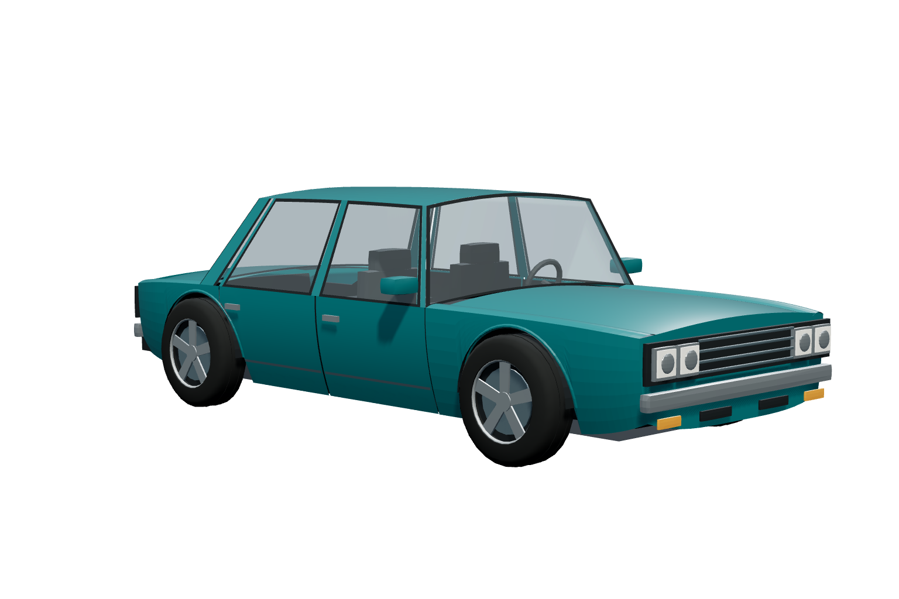
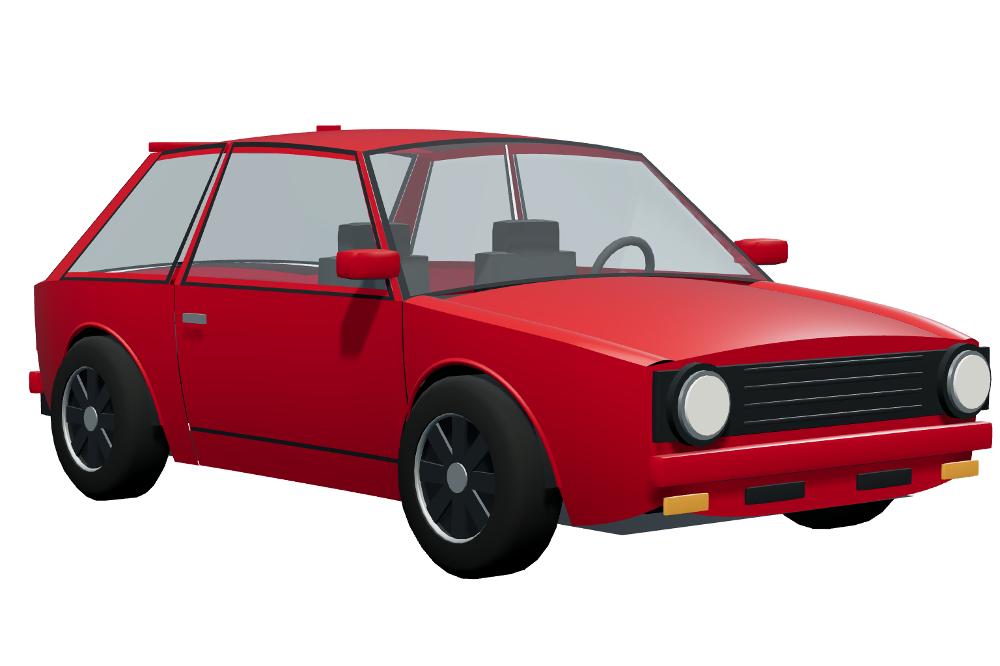
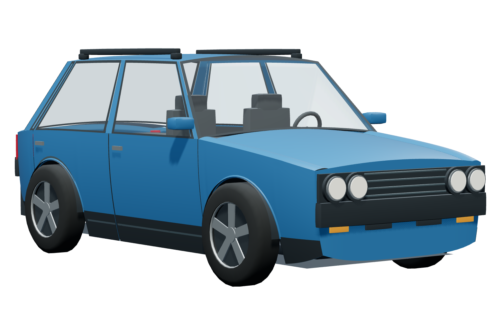
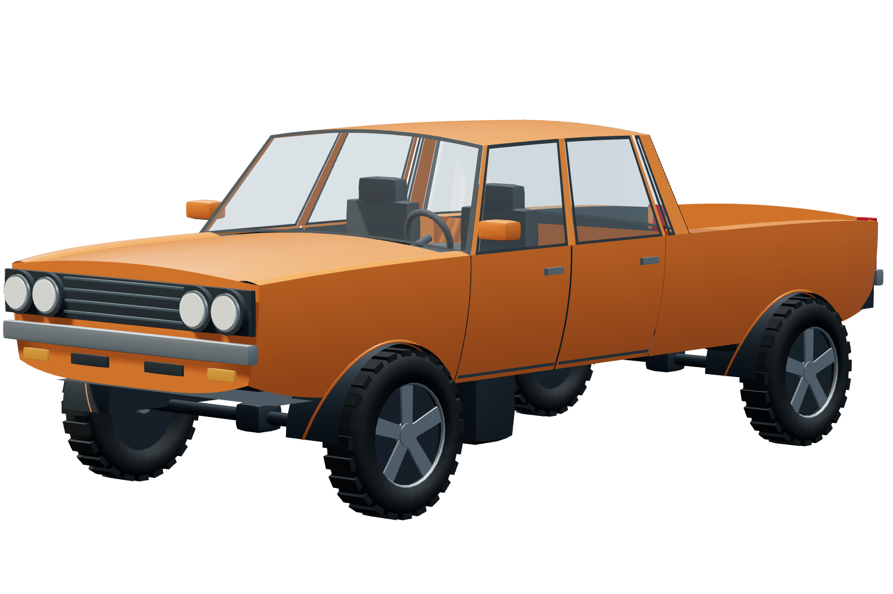
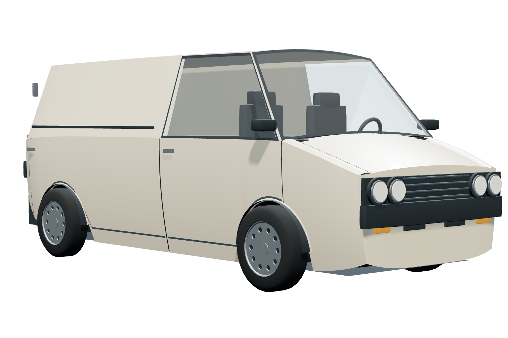
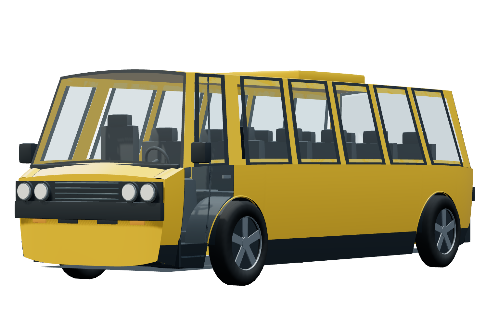

Berline
Prototype avec dégâts et physique; optimisation encore ouverte.
Ouvrir le modèle 3DImage de référence
Compacte
Peinture et vitrages en réglage; dégâts non activés.
Ouvrir le modèle 3DImage de référence
SUV
Formes, protections et accessoires en cours; dégâts non activés.
Ouvrir le modèle 3DImage de référence
Pickup
Formes, caisse et roues en cours; dégâts non activés.
Ouvrir le modèle 3DImage de référence
Fourgon
Formes, portes de chargement et roues acier en cours; dégâts non activés.
Ouvrir le modèle 3DImage de référence
Autobus
Formes, sièges et entrée en cours; dégâts non activés.
Ouvrir le modèle 3DImage de référence